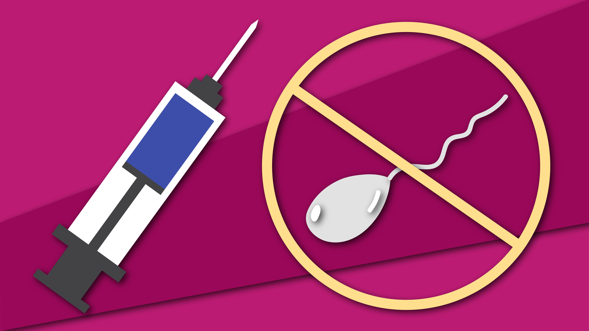

Colegio de bachilleres del estado de morelos santa rosa 30
Leonel Aguirre Medina - Grupo 501 - Páginas Web - Fecha 7-8-2025
Píldoras Anticonceptivas
Las píldoras anticonceptivas son un método hormonal muy eficaz para prevenir el embarazo. Se toman por vía oral y contienen hormonas (estrógeno y progestina, o solo progestina) que evitan la ovulación.
¿Cómo funcionan?
Inhiben la ovulación (no se libera un óvulo).
Engrosan el moco cervical, dificultando el paso del esperma.
Alteran el revestimiento del útero, haciendo menos probable la implantación.
Tipos de píldoras anticonceptivas
Combinadas: Estrógeno y progestina. Se toman durante 21 días seguidos, con 7 días de descanso o píldoras placebo.
Solo progestina (minipíldora): Recomendadas para mujeres lactantes o que no pueden tomar estrógenos.
Ventajas
Alta eficacia (más del 99% con uso correcto).
Regulan el ciclo menstrual.
Reducen el acné y cólicos menstruales.
Disminuyen el riesgo de algunos tipos de cáncer.
Desventajas o efectos secundarios
Náuseas, sensibilidad en los senos, cambios de humor.
Manchado entre periodos.
No protegen contra ETS.
Se deben tomar a la misma hora cada día.
¿Quiénes deben evitarlas?
No son recomendadas para personas con coágulos, presión alta, migrañas graves o fumadoras mayores de 35 años.
Inyecciones Anticonceptivas

Las inyecciones anticonceptivas son un método hormonal aplicado mediante una inyección intramuscular, generalmente cada 1 o 3 meses. Contienen progestina, que evita la ovulación.
¿Cómo funcionan?
Inhiben la ovulación.
Engrosan el moco cervical, bloqueando el paso del esperma.
Hacen el endometrio menos receptivo.
Ventajas
Muy eficaz (hasta 99%).
No requiere uso diario.
Disminuye dolores menstruales.
Reduce riesgo de ciertos cánceres ginecológicos.
Desventajas o efectos secundarios
Aumento de peso.
Irregularidades menstruales.
Fertilidad puede tardar en regresar al suspenderla.
No protege contra ETS.
Requiere acudir al centro de salud.
Parches Anticonceptivos
El parche anticonceptivo es un pequeño adhesivo que se coloca en la piel (brazo, abdomen, espalda o glúteo) y libera hormonas similares a las de la píldora.
¿Cómo funciona?
Evita la ovulación.
Espesa el moco cervical.
Modifica el revestimiento del útero.
Modo de uso
Se coloca un parche cada semana durante 3 semanas.